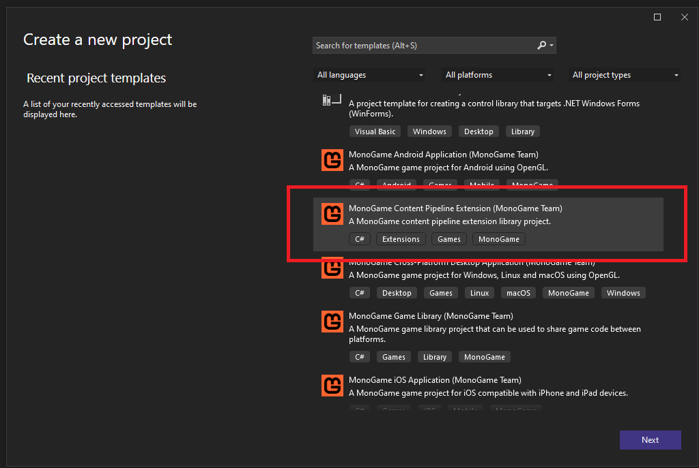
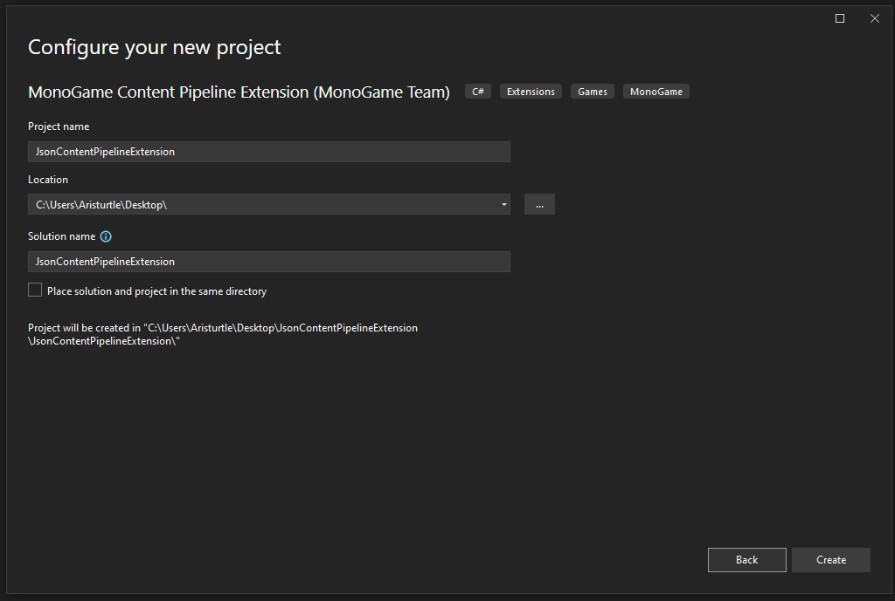
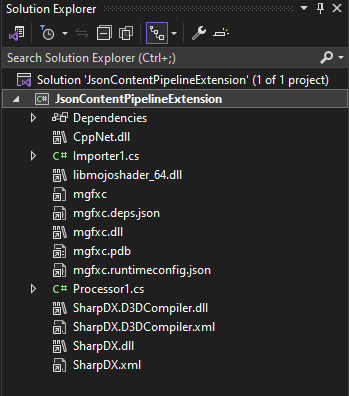
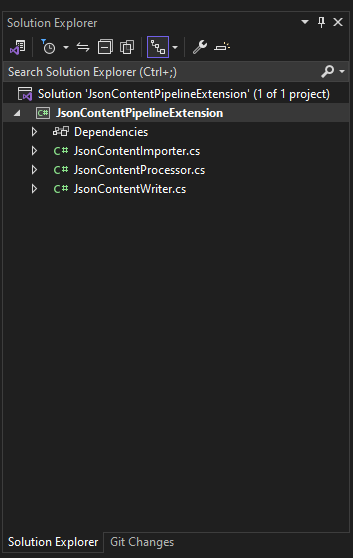

Create the MonoGame Content Pipeline Extension Project
The first thing we'll need to do is create a new MonoGame Content Pipeline Extension project. Using this template to create the project will give us some necessary things already pre-configured for us, like the NuGet package references that would be needed. Open Visual Studio and create a new MonoGame Content Pipeline Extension project

For the purposes of this tutorial, I have given the project the name JsonContentPipelineExtension. You can name it whatever you would like, just remember that when I use that name to replace it with what you called the project.

Note
For users that are using Visual Studio Code, you can create a new MonoGame Content Pipeline Extension project by using the dotnet cli with the following command
dotnet new mgpipeline -n JsonContentPipelineExtension
Once we have our project created, you should have the following project files:

Tip
Several of the files listed in the project are dependencies that are added by the MonoGame.Framework.Content.Pipeline NuGet reference that the project has. These can make the Solution Explorer window a bit crowded. While we do need these dependencies there, we can hide them from the Solution Explorer view so they are not in our way. Do do this, double-click the project in the Solution Explorer panel to open the .csproj in a text editor. Then, on the line before the </Project>at the bottom, add the following
<ItemGroup>
<Content Remove="\**\*\CppNet.dll" />
<Content Remove="\**\*\libmojoshader_64.dll" />
<Content Remove="\**\*\mgfxc*" />
<Content Remove="\**\*\SharpDX.*" />
</ItemGroup>
Then save the file. You should instantly notice the dependency files are now not shown in the Solution Explorer.
This template gives use an out-of-the-box ContentImporter file called Importer1.cs and an out-of-the-box ContentProcessor file called Processor1.cs. These are not very descriptive names for our project so let's rename them
- Rename
Importer1.cstoJsonContentImporter.cs - Renamed
Processor1.cstoJsonContentProcessor.cs
Note
When you rename the files in the Solution Explorer panel, you may receive a pop-up asking if you would like to perform a rename in the project of all references to the old file name. Choose Yes.

Add JsonContentPropertyResult Class
One final thing we'll need to do before moving on is to create a class file that we can use to store the data transferred from the JsonContentProcessor to the JsonContentTypeWriter
The reason we need to do this is because the JSON, once we read it in is going to just be a string value. As such, some basic types like string cannot be used as the type for the data that is passed through the workflow because it conflicts with existing built-in importers and processors. So we need to create a model class that acts as a data transfer object (DTO) for our data.
To do this, create a new class file in the project named JsonContentProcessorResult.cs, then add the following code to the file
namespace JsonContentPipelineExtension
{
public class JsonContentResult
{
public string Json { get; set; }
public string RuntimeType { get; set; }
}
}
Next Steps
That's it for the initial setup of our MonoGame Content Pipeline Extension project. On the next page, we'll go over the ContentImporter class, the anatomy of it, and adjust it so that it will load our JSON files for this tutorial.